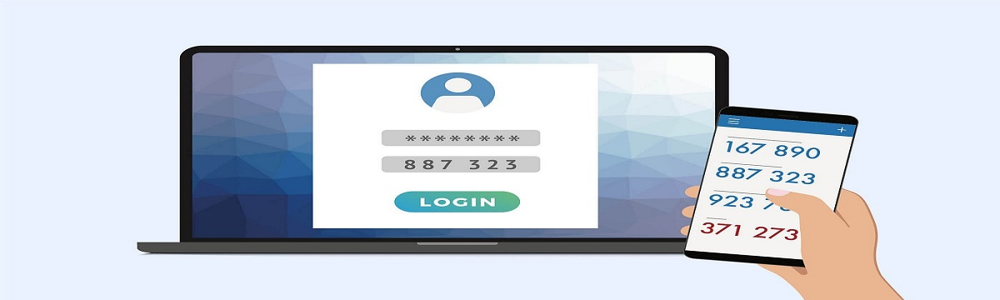

Awareness of Being Hacked and Data Protection
In today's digital age, the threat of being hacked and having your sensitive data leaked is more prevalent than ever. It's crucial to stay informed and take proactive steps to protect yourself online.
Tips to Avoid Data Leakage and Hacking:
- Use Strong Passwords: Create unique passwords for each of your accounts, using a combination of letters, numbers, and special characters. Avoid using easily guessable information like birthdays or pet names.
- Enable Two-Factor Authentication (2FA): Adding an extra layer of security through 2FA can significantly reduce the risk of unauthorized access to your accounts, even if your password is compromised.

- Regularly Update Software: Keep your operating system, antivirus software, and applications up to date with the latest security patches. Hackers often exploit vulnerabilities in outdated software.
- Be Cautious of Phishing Attempts: Exercise caution when clicking on links or downloading attachments in emails, especially if they're from unknown senders. Phishing emails are a common tactic used by hackers to trick users into revealing sensitive information.
- Use Secure Connections: Avoid using public Wi-Fi networks for accessing sensitive information such as online banking or shopping. Use a virtual private network (VPN) when connecting to public Wi-Fi to encrypt your data.

- Regularly Backup Your Data: In case of a data breach or ransomware attack, having backups of your important files can help you recover without losing valuable information.

- Stay Informed: Keep yourself updated on the latest cybersecurity threats and best practices for staying safe online. Awareness is key to preventing cyber attacks.
By following these tips and staying vigilant, you can minimize the risk of being hacked and protect your sensitive data from being leaked.
Check if your email has been compromised: https://haveibeenpwned.com
The presentation is done by Student Qusai Ali for Applied Science University.